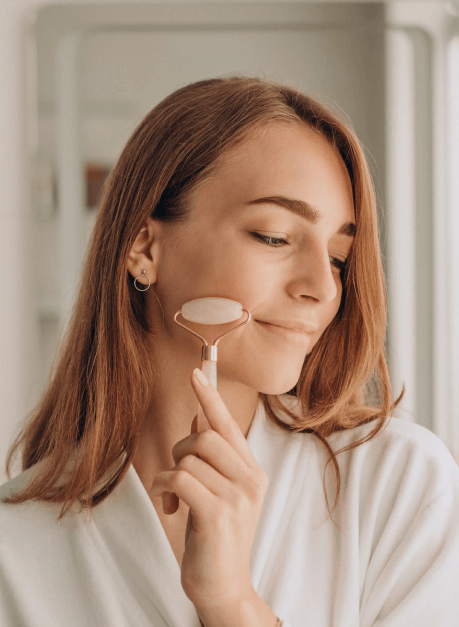

5 простых правил, которые улучшат состояние вашей кожи

13.01.2023

1 055

5 мин
Наша кожа выполняет функцию защитного барьера.
При сегодняшних ритмах жизни не удивительно, что эта функция ослабевает.
Но хуже ослабления может быть только повреждение.
Экология, образ жизни, социальный уровень – это некоторые из аспектов, которые напрямую влияют на состояние кожных покровов.
Но мы не можем вычеркнуть из повседневной жизни моющие средства, пыль, токсичные выбросы в атмосферу и другие раздражители.
Тем не менее стоит постараться нивелировать влияние негативной среды на здоровье кожи.
Существует несколько способов помочь себе в этом.
Делать массаж лица при ремиссии

В стадии обострения массажи противопоказаны, но, когда острая фаза болезни позади, массажи становятся хорошей профилактикой. Однако, стоит избегать жестких техник. Идеально подходит лимфодренажный массаж, который можно проделывать дома в кресле.
Перед началом нужно умыться и очистить лицо, затем устроиться поудобнее и выполнить плавные движения по следующим направляющим:
- от центра лба к вискам
- от кончика носа к центру лба
- от крыльев носа к вискам
- от уголков рта к центру уха
- от центра подбородка к мочкам уха
Ежедневно заботиться о здоровье кожи
Защиту коже обеспечивает верхний роговой слой. Иногда он разрушается, что грозит попаданием неблагоприятных бактерий.
На практике это выражается в сухости, такую кожу обычно называют чувствительной и склонной к раздражению.
Но дело в том, что некоторые биологические соединения человеческий организм не может синтезировать сам и должен получать извне.
Поэтому важно смягчать и увлажнять кожу ежедневно. Это способствует сохранению целостности рогового слоя.
С увлажнением вот какая история: в роговом слое содержание воды незначительно и составляет 10–30% в зависимости от влажности окружающей среды.
При этом вода распределена неравномерно, а она необходима для нормального функционирования клеток кожи.
Поэтому увлажнение – это не маркетинговые уловки производителей уходовых средств, а необходимость, особенно при сильном ветре, морозе и сухом климате.
Самым распространенным заболеванием при недостаточном уходе за кожей лица при пребывании на ветру, морозе или жаре является розацеа.
Это явление представляет собой расширение кожных капилляров, выраженное в покраснении и зуде. Избавиться от розацеа помогает
Метрогил® гель.
Он обладает высокой проникающей способностью, уменьшает зуд и воспаление.
Пользоваться новыми технологиями
Еще один способ сохранить здоровье кожи – одежда из антибактериального текстиля.
Сегодня известно несколько способов придания антибактериальных свойств текстильным волокнам с помощью наночастиц серебра.
Эти технологии успешно осваиваются производителями разных стран, и сегодня можно увидеть широкий ассортимент одежды, салфеток, постельного белья и других изделий.
При выраженных проблемах с кожей – это отличная альтернатива раздражающей ткани.
Сбалансированно питаться
Внешнее состояние кожи во многом обусловлено характером принимаемой пищи.
Ученые давно доказали эту взаимосвязь, поэтому нет необходимости еще раз приводить все «за» и «против» здорового питания.
Первое, что необходимо сделать при кожных заболеваниях – это привести в равновесие и нормализовать бактериальный состав ЖКТ.
В питании рекомендуется отдавать предпочтениея белому мясу птицы или рыбы, никаких полуфабрикатов, копченостей и фастфуда.
Питание должно быть максимально сбалансированнымо: супы, овощи, крупы, хлебцы.
Совершенно необязательно садиться на специальную строгую диету. Но, например, при обострении розацеа точно нужно исключить:
- горячие напитки и супы
- алкоголь, особенно пиво и красное вино
- продукты, содержащие карри и чили
Литература:
- Белоусова Т. А. Современные представления о структуре и функции кожного барьера и терапевтические возможности коррекции его нарушений // Русский медицинский журнал. – 2004.
- Антонова М. В. Методы придания антибактериальных свойств текстильным волокнам. Научная статья по специальности «нанотехнологии», г. Казань, 2014.